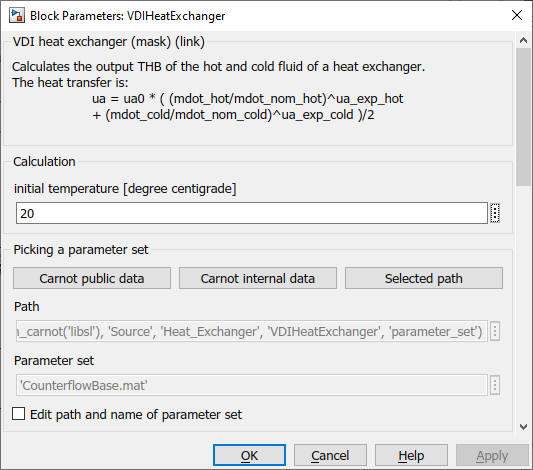
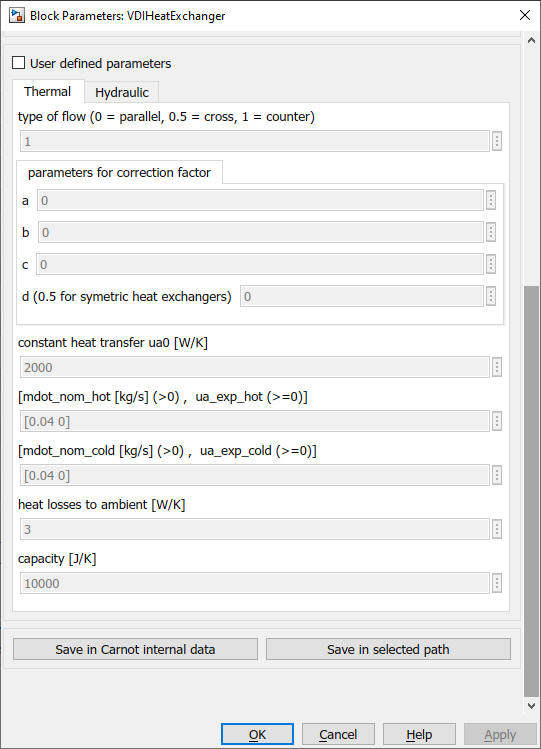
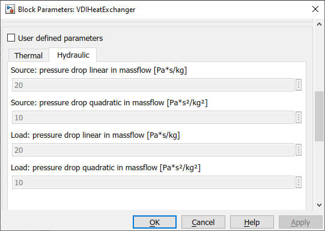

VDIHeatExchanger
Path:
CARNOT/Source/Heat_Exchanger
Purpose:
Calculates the output
Thermo-Hydraulic Bus of the hot and cold fluid of a heat exchanger.
Cross-flow heatexchangers are calculated with the equation for
approximation and standardized calculation described in VDI-Wärmeatlas.
For this purpose the four parameters a,b,c and d are used.
Description:
The heat exchanger is characterised by the number of transfer units (NTU).
Input temperatures are delayed by the heat capacity of the exchanger.
Parallel, cross and counter flow are possible.
The delay for the inlet temperature on primary an secondary side is:
(0.5*m*cp)*dTin/dt = mdot*cp*(Tin-T) - UAloss/2*(Tamb-T)
Toutpri = Tinpri - psi * (Tinpri - Tinsec)
W = mdot * cp
Toutsec = Tinsec - Wpri/Wsec * (Tinpri - Toutpri)
UA = UA0 * ( (mdot_pri/mdot_nom_pri)^ua_exp_pri + (mdot_sec/mdot_nom_sec)^ua_exp_sec )
NTU = UA/Wpri
For flowtype == 1 or flowtype == 0:
psi1 = exp(-NTU*(1 + min(Wpri,Wsec) /max(Wpri,Wsec)*(1 - 2*flowtype)))
psi = (1-psi) / (1+min(Wpri,Wsec) /max(Wpri,Wsec)*(1-flowtype*(1+ psi)))
For 0 < flowtype < 1 :
psi1 = exp((Wpri/Wsec-1)*NTU*F)
for Wpri/Wsec ≠ 1 : psi = (1-psi) / (1-(Wpri/Wsec)*psi)
for Wpri/Wsec == 1 : psi = NTU*F / 1+NTU*F
F = 1 / (1+a*(Wpri/Wsec)ˆdb *NTUˆb)ˆc
The equation is correct only for 1 ≥ F ≥ 0.25 relative Error for F is less than 5 % and relative error for dimension less temperature change is less than 3 %. In the important range of F > 0,7 it is less than 1 %.
| symbol | used for | units |
| cp | specific heat capacity | J/kg/K |
| m | mass of the heat exchanger | kg |
| flowtype | type of heat exchanger (0=parallel,0.5=cross,1=counter) | |
| mdot | mass flow | kg/s |
| psi | dimensionless temperature change | - |
| pri | index for primary side | - |
| sec | index for secondary side | - |
| Tin | temperature at inlet | °C |
| Tout | temperature at outlet | °C |
| Tamb | ambient temperature | °C |
| t | time | s |
| UAloss | heat loss coefficient | W/K |
| W | capacity flow | W/K |
The parameters a,b,c,d for different heatexchangers are described in C1 Table 1 of VDI-Wärmeatlas. You may use the function
VDIHeatExchanger_findabcd.m
in the folder
carnot\public\library_simulink\Source\Heat_Exchanger\VDIHeatExchanger\scripts
to identify the parameters for your application.
Input:
| Tamb | : | ambient temperature in °C |
| THBpri | : | Thermo-Hydraulic Bus of the primary inlet |
| THBsec | : | Thermo-Hydraulic Bus of the secondary inlet |
Output:
| THBpri | : | Thermo-Hydraulic Bus of the primary outlet |
| THBsec | : | Thermo-Hydraulic Bus of the secondary outlet |
Parameters and Dialog Box:



Examples:
Open the example explorer from the Matlab command window
ExampleBrowser
or load the examples via the CARNOT library.
Literature:
VDI-Wärmeatlas, Verein Deutscher Ingenieure, Springer 2019
Characteristics:
| Direct Feedthrough | : | Yes |
| Sample Time | : | Inherited from driving block |
| Vectorized | : | No |